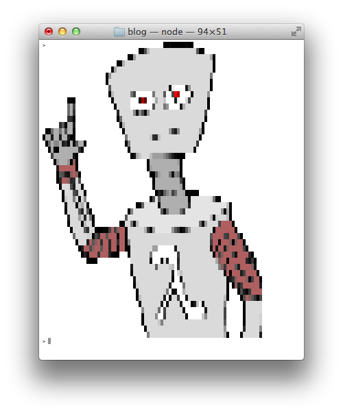

Modules and tutorial demonstrating HTML parsing with node.js
One of the the best parts about server side JavaScript is the lack of the DOM, but sometimes you need to parse HTML in your node programs. For a while JSDOM has been the most well known module for accomplishing this task, but it has a number of issues. The author, @tmpvar, has been developing super awesome node powered robots instead of maintaining it. It also turns out that a full DOM level 3 implementation is super complex and crazy which means JSDOM suffers from some pretty bad memory leaks that leaves it unusable for a lot of complex use cases.
Instead of rewriting the DOM in pure JS, a more realistic approach is a nice and simple HTML parser that implements a CSS selector API. Enter cheerio, a module that can teach your server HTML.
Cheerio is built on top of the htmlparser2 module, a sax-like parser for HTML/XML. The goal of Cheerio is to implement most of the jQuery API in pure JS, without the need for a DOM. There is a separate dependency called cheerio-select that implements the sizzle API. The cheerio module itself more or less implements the jQuery API.
Since there is no DOM in node you have to initialize a cheerio instance from an HTML string. (this example comes from the cheerio readme)
var cheerio = require('cheerio'),
$ = cheerio.load('<h2 class = "title">Hello world</h2>');
$('h2.title').text('Hello there!');
$('h2').addClass('welcome');
$.html();
//=> <h2 class = "title welcome">Hello there!</h2>
If you have an HTML file on disk that you want to load, you can use nodes fs module (warning: don't use sync calls inside an event loop, only use them when you don't care about performance):
var $ = require('cheerio')
var fs = require('fs')
var htmlString = fs.readFileSync('index.html').toString()
var parsedHTML = $.load(htmlString)
// query for all elements with class 'foo' and loop over them
parsedHTML('.foo').map(function(i, foo) {
// the foo html element into a cheerio object (same pattern as jQuery)
foo = $(foo)
console.log(foo.text())
})
Similarly, you can use the popular request module to grab HTML from a remote server using HTTP and then pass it to cheerio:
var $ = require('cheerio')
var request = require('request')
function gotHTML(err, resp, html) {
if (err) return console.error(err)
var parsedHTML = $.load(html)
// get all img tags and loop over them
var imageURLs = []
parsedHTML('a').map(function(i, link) {
var href = $(link).attr('href')
if (!href.match('.png')) return
imageURLs.push(domain + href)
})
}
var domain = 'http://substack.net/images/'
request(domain, gotHTML)
Building on the last example, here is how to fetch the raw binary data of each img on the page and render the images in your terminal using picture-tube and the node Stream API:
var pictureTube = require('picture-tube')
var randomIndex = Math.floor(Math.random() * imageURLs.length)
var randomImage = imageURLs[randomIndex]
request(randomImage).pipe(pictureTube()).pipe(process.stdout)

Now, go forth and scrape!